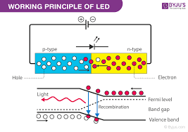
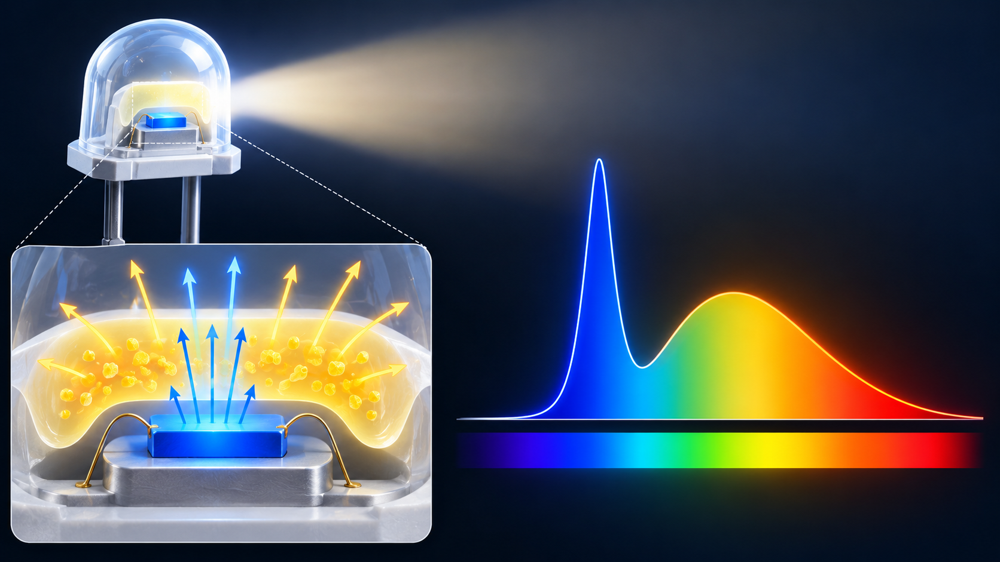

Obiettivi
- Descrivere in parole come una giunzione LED emette luce.
- Distinguere chip, fosfori, driver e dissipazione termica.
- Spiegare luce bianca, temperatura di colore e LED caldi o freddi.
- Distinguere colore della luce e resa dei colori degli oggetti.
- Interpretare durata dichiarata e perdita progressiva del flusso.
Come funziona un LED?
Livello intuitivo: Un LED è un piccolo componente elettronico che può trasformare una parte dell’energia elettrica in luce. Nel materiale, elettroni e “lacune”, cioè posti disponibili per elettroni, si ricombinano. Alcune di queste ricombinazioni liberano energia luminosa.
Per essere maggiormente rigorosi: La giunzione semiconduttrice, polarizzata direttamente, permette l’iniezione di cariche nella regione attiva. La ricombinazione radiativa produce fotoni. Materiale e struttura contribuiscono a determinarne lo spettro. Le ricombinazioni non radiative dissipano energia senza produrre luce utile.

Il LED e la lampada completa
Livello intuitivo: Il chip da solo non basta. Servono un’alimentazione controllata, un supporto che disperda il calore e un’ottica che distribuisca la luce dove serve.
Per essere maggiormente rigorosi: Il driver controlla corrente e funzionamento. La gestione termica limita l’aumento della temperatura della giunzione. Riflettori, diffusori e lenti regolano la distribuzione. Efficienza del chip e prestazioni dell’intero apparecchio non coincidono.
Come si ottiene un LED bianco?
Chip blu e fosfori
Livello intuitivo: Molti LED bianchi partono da un chip blu. Un rivestimento ne assorbe parte della luce e la riemette in una banda più ampia. La miscela di blu e luce convertita appare bianca.
Per essere maggiormente rigorosi: Il risultato comprende di solito una componente blu relativamente stretta e un’emissione più larga dei fosfori. Variando materiali e proporzioni cambiano colore apparente e resa cromatica. Il LED bianco non emette necessariamente tutte le lunghezze d’onda con la stessa intensità.

Combinazione di emettitori
Livello intuitivo: Possiamo anche mescolare luce di più LED, per esempio rosso, verde e blu. Regolando i contributi otteniamo colori diversi o una luce che appare bianca.
Per essere maggiormente rigorosi: Colore apparente simile non significa spettro identico. Due sorgenti bianche possono far apparire diversi i colori degli oggetti. Esistono inoltre soluzioni ibride con emettitori colorati e fosfori.
Temperatura di colore
LED caldi, neutri e freddi
Livello intuitivo: “Caldo” descrive una luce più giallastra; “freddo” una luce più azzurrata. Non significa che il LED caldo scaldi necessariamente più del LED freddo.
| Aspetto indicativo | Temperatura di colore correlata |
|---|---|
| Bianco caldo | Circa 2700–3000 K |
| Bianco neutro | Intorno a 4000 K |
| Bianco freddo o diurno | Circa 5000–6500 K |
Per essere maggiormente rigorosi: Sono intervalli commerciali indicativi, con confini non universali. La temperatura di colore correlata confronta l’apparenza cromatica con quella di una sorgente termica di riferimento. Si misura in kelvin, simbolo K, senza il simbolo di grado. Non è la temperatura fisica del chip.
Colore della sorgente e resa cromatica
Livello intuitivo: La temperatura di colore dice se il bianco sembra più caldo o freddo. La resa cromatica riguarda invece come appaiono i colori delle cose illuminate.
Per essere maggiormente rigorosi: La CCT non riassume lo spettro né garantisce la fedeltà dei colori. La valutazione richiede altri indici e il contesto d’uso. Un bianco caldo non è automaticamente più fedele, così come un bianco freddo non è automaticamente più efficiente.
Consumo e calore
Livello intuitivo: Un LED può produrre luce con meno consumo rispetto a una lampada a incandescenza di luminosità simile, ma produce comunque calore e deve disperderlo.
Per essere maggiormente rigorosi: Prestazioni e consumo dipendono da flusso richiesto, spettro, corrente, driver e temperatura. La potenza in watt va letta insieme ai lumen e alla distribuzione luminosa. Un apparecchio mal raffreddato può perdere prestazioni e degradarsi più rapidamente.
Che cosa significa “durata del LED”?
Perdita di luminosità e guasto
Livello intuitivo: Una lampadina tradizionale può spegnersi quando si rompe il filamento. Un LED spesso perde luminosità gradualmente. Può però anche smettere di funzionare per un guasto del driver o di altri componenti.
Per essere maggiormente rigorosi: La durata deve specificare un criterio di mantenimento del flusso e condizioni di funzionamento. Una dichiarazione L70 indica il tempo associato al raggiungimento del 70% del flusso iniziale secondo il metodo dichiarato. Non significa che a quell’ora ogni lampada si spenga, né che tutte le lampade arrivino allo stesso istante a quella soglia.
Come interpretare un dato in ore?
Livello intuitivo: Se un prodotto dichiara molte ore, dobbiamo chiederci in quali condizioni e con quanta luce residua. Ore di laboratorio e anni di uso domestico non sono la stessa informazione.
Per essere maggiormente rigorosi: Temperatura, corrente, accensioni, ambiente, driver e materiali influenzano degrado e guasti. La conversione in anni dipende dalle ore giornaliere di utilizzo. Le stime di mantenimento del chip non garantiscono da sole la vita utile dell’intero apparecchio.